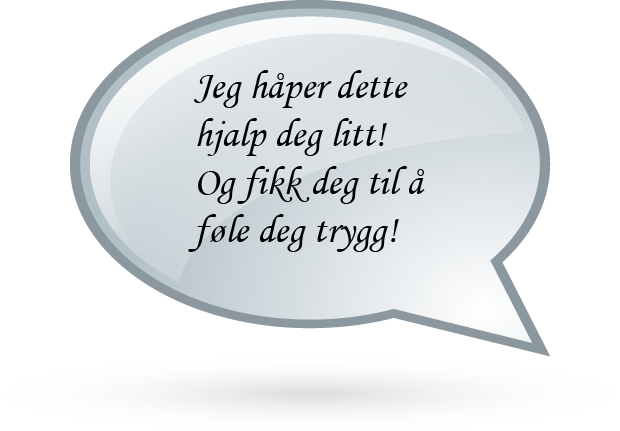
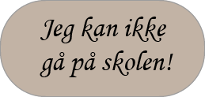
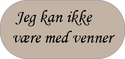
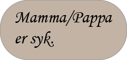
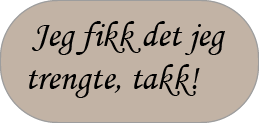

Jeg vet at det er skummelt å bli syk, og ikke ha det bra. Men det er også en sjanse for kroppen din å ta igjen og lade opp.
Som jeg forklarte deg i “hvordan kan jeg holde meg frisk” er det flere trinn du kan gjøre for å prøve å forhindre at du blir syk.
Du kan rengjøre hendene hver gang du har vært ute, og ikke ha hendene i nærheten av munnen eller nesen. Og husk alltid å bruke nok såpe mens du vasker hendene.
Når du er utenfor og ikke vet om menneskene du møter er syke eller ikke, bør du alltid holde et godt stykke avstand mellom deg og de, men du kan fortsatt sosialisere bare ikke ta på eller klemme dem og prøve å ha minst 1 meter mellom hver person.
Og hvis du blir syk selv når du har prøvd alt for ikke å bli syk. Husk å fortelle foreldrene dine slik at de kan hjelpe deg. Legg deg i sengen eller på sofaen med et teppe rundt deg. Og husk alltid å holde deg hydrert og drikke mye vann.

Hva vil du lære om nå?
   